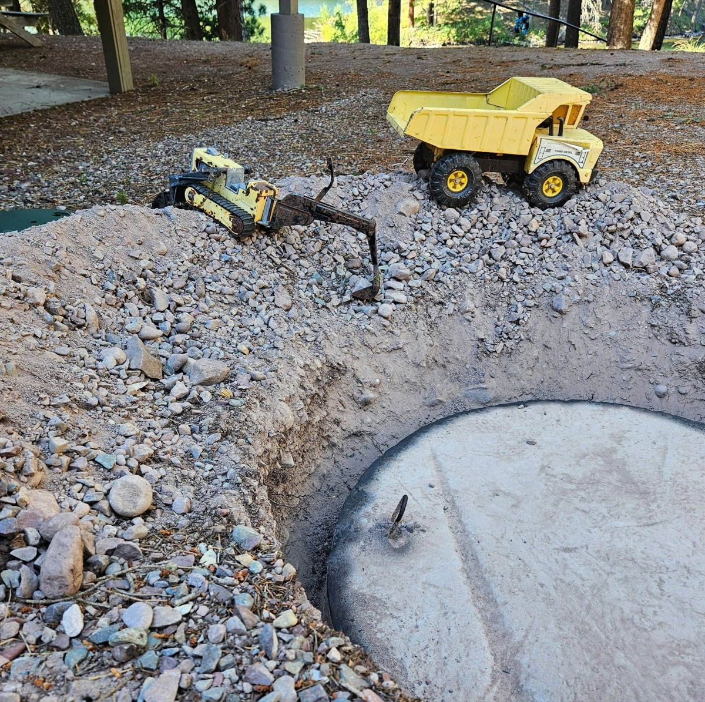

Septic Tank Service
Rock-solid septic service for Seeley Lake and the Seeley-Swan Valley.
Rockn B Septic handles pumping, inspections, maintenance, riser and lid installs, and pump replacements with fast response and fair pricing.
Saving Our Lake, One Tank at a Time
Local and experienced
Serving local homes and properties for 13 years.
From routine septic tank pumping to camera inspections and tank checks, Rockn B Septic helps keep important systems working in Seeley Lake, the Seeley-Swan Valley, and nearby towns.
You get practical, no-nonsense service from a local company that knows the area, the roads, and the value of getting the job done right.
What we do
Core septic services

Why call Rockn B
Reliable service without the runaround.
- Local service for Seeley Lake and the surrounding valley
- Fast, direct phone contact when septic problems cannot wait
- Fair pricing and clear communication
- Experience with pumping, maintenance, inspections, and repairs
Stay connected